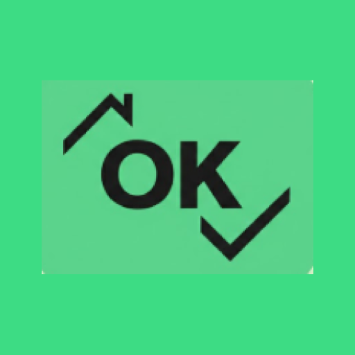

L'automate intelligent pour Check & Visit (v1.1)
Voici le fonctionnement de votre bandeau overlay :
Bouton ">" : Réduit tous les items de la pièce actuelle pour gagner en visibilité.
Bouton "STOP" : Interrompt immédiatement toute action automatique en cours.
Bouton "BonOK" : Remplit automatiquement la pièce en cours (État Bon, Propreté OK, Fonctionne).
Bouton "TT" : Lance le traitement automatique sur l'intégralité des pièces de la mission.
1 Téléchargement : Cliquez sur le bouton bleu en haut de cette page pour récupérer le fichier .apk.
2 Sources inconnues : Si Android bloque l'installation, autorisez votre navigateur à installer des applications.
3 Superposition : Au premier lancement, autorisez l'application à "S'afficher par-dessus les autres".
5 Accessibilité : Activez le service dans vos paramètres d'accessibilité pour permettre au robot de cliquer.
4 Optimisation batterie : Pour éviter que le robot ne s'arrête tout seul, allez dans les infos de l'application > Batterie > et cochez "Non restreinte" (ou "Aucune optimisation").
Problème "Paramètre restreint" ?
Si le bouton d'accessibilité est grisé sur votre tablette :
1. Allez dans les Paramètres > Applications.
2. Cherchez l'application Check Assistant.
3. Cliquez sur les ⋮ (3 points) en haut à droite.
4. Choisissez "Autoriser les paramètres restreints".
5. Le service d'accessibilité est maintenant débloqué !
1 Téléchargez votre mission sur Check & Visit.
2 Ouvrez la page Pièce (icône maison 🏠). Assurez-vous que la pièce est vide.
3 Appuyez sur Bon/OK pour la pièce actuelle, ou TT pour automatiser tout l'appartement.
1. Installation
2. Utilisation
3. Dépannage